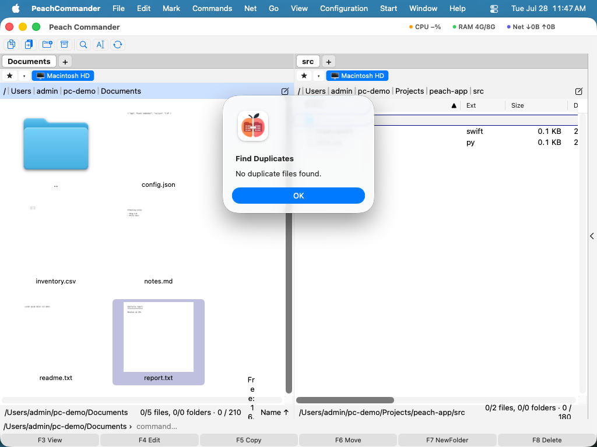

Souborové nástroje
Kromě kopírování a přesouvání zahrnuje Peach Commander sadu každodenních souborových nástrojů pro ověření neporušenosti souborů, uvolnění místa na disku, rozdělení velkých souborů na menší části a převod souborů do a z textově bezpečných formátů. Ke všem se dostanete z nabídky Soubor a působí na to, co máte vybráno v aktivním panelu (nebo na položku pod kurzorem, když není nic vybráno). Toto téma pokrývá kontrolní součty, hledač duplikátů, rozdělení/spojení, kódování/dekódování a výpočet zabraného místa.
Vytvoření nebo ověření kontrolních součtů
Kontrolní součty umožňují potvrdit, že se soubor stáhl nebo zkopíroval bez poškození, nebo předat příjemci způsob, jak zkontrolovat kopii, kterou obdržel.
- Vyberte soubory, které chcete opatřit otiskem.
- Zvolte Soubor ▸ Vytvořit kontrolní součty…, vyberte algoritmus (CRC32, MD5, SHA-1, SHA-256 nebo SHA-512) a uložte soubor kontrolního součtu.
- Chcete-li soubory zkontrolovat později, vyberte soubor kontrolního součtu a zvolte Soubor ▸ Ověřit kontrolní součty…. Peach Commander znovu vypočítá každý hash a nahlásí každý soubor, který neodpovídá.
Kontrolní součty se počítají přímo přes aktuální umístění, takže je můžete vytvořit nebo ověřit i pro soubory uvnitř archivů nebo na FTP serveru.
Hledání duplicitních souborů
Hledač duplikátů najde totožné soubory roztroušené po složkách, abyste mohli odstranit nadbytečné kopie.
- Vyberte složky (nebo soubory), které chcete prohledat.
- Zvolte Soubor ▸ Najít duplikáty…. Peach Commander porovná kandidáty a seskupí soubory, které jsou byte po bytu totožné.
- Projděte každou skupinu, označte kopie, které již nepotřebujete, a smažte je.

(Obrázek: hledač duplikátů seskupuje totožné soubory, abyste si jeden ponechali a zbytek odstranili.)Rozdělení a spojení souborů
Rozdělení rozbije jeden velký soubor na číslovanou sérii menších částí — praktické pro limity úložiště nebo přenosu. Spojení je znovu sestaví.
- Chcete-li rozdělit, vyberte soubor a zvolte Soubor ▸ Rozdělit soubor…, poté nastavte velikost části. Části se zapíší do složky druhého panelu.
- Chcete-li znovu sestavit, vyberte první část a zvolte Soubor ▸ Spojit soubory…. Původní soubor je znovu sestaven z číslovaných částí.
Kódování a dekódování
Kódování změní binární soubor na prostý text, aby přežil kanály, které přenášejí pouze text (například starší e-mail nebo vkládací pole). Dekódování to obrátí.
- Vyberte soubor a zvolte Soubor ▸ Kódovat…, poté vyberte formát — MIME (Base64), UUE (uuencode) nebo XXE.
- Chcete-li obnovit originál, vyberte zakódovaný soubor a zvolte Soubor ▸ Dekódovat…. Formát je zjištěn automaticky.
Výpočet zabraného místa
Chcete-li vidět, kolik místa složka nebo výběr skutečně zabírá na disku, vyberte položky a stiskněte Ctrl+L (Soubor ▸ Vypočítat zabrané místo…). Peach Commander sečte každý soubor uvnitř, včetně podsložek, a zobrazí celkový součet.
Zkratky
| Akce | Klávesa |
|---|---|
| Vypočítat zabrané místo | Ctrl+L |
Poznámky
- Kontrolní součty, rozdělení/spojení a kódování/dekódování jsou určeny pro pokročilejší úlohy, ale každá je jediným dialogem s rozumnými výchozími hodnotami.
- Když nástroj vytvoří nové soubory (části rozdělení, zakódovaný soubor, seznam kontrolních součtů), zapíšou se do složky zobrazené v druhém panelu — nejprve tento panel nastavte na zamýšlený cíl.
- Mazání duplikátů je trvalé v závislosti na vašem nastavení mazání; každou skupinu pečlivě projděte a ponechte si alespoň jednu kopii všeho, co ještě potřebujete.